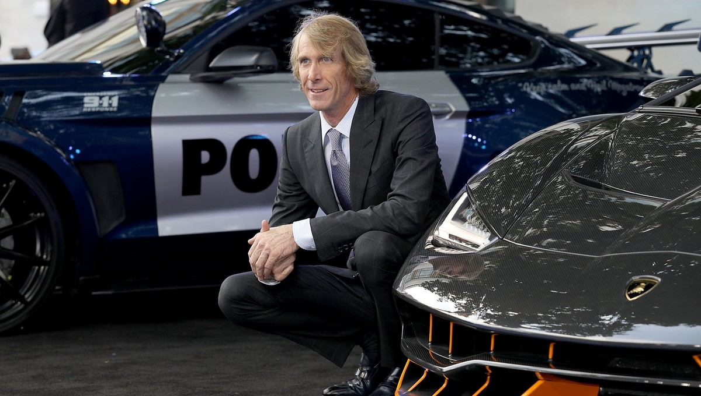

Actors/Director
Megan Denise Fox is an American actress and model. She began her acting career in 2001, with several minor television and film roles, and played a regular role on the Hope & Faith television sitcom. In 2004, she made her film debut with a role in the teen comedy Confessions of a Teenage Drama Queen.
Shia Saide LaBeouf is an American actor, performance artist, and filmmaker. He became known among younger audiences as Louis Stevens in the Disney Channel series Even Stevens, a role for which LaBeouf received a Young Artist Award nomination in 2001 and won a Daytime Emmy Award in 2003
John Michael Turturro is an Italian-American character actor, writer and filmmaker known for his roles in the films Do the Right Thing, Miller's Crossing, Barton Fink, Quiz Show, The Big Lebowski, O Brother, Where Art Thou? and four entries in the Transformers film series, most recently The Last Knight.
Mark Ryan is an English actor, author, action director and voice actor. He is perhaps best known for his portrayal of Mr. Gates in the Michael Bay/Starz production of the pirate show Black Sails
Peter Claver Cullen is a Canadian voice actor. He is best known as the voice of Optimus Prime in the original 1980s Transformers animated series, and most other incarnations of the character.

Michael Benjamin Bay is an American filmmaker known for directing and producing big-budget, high-concept action films characterized by fast cutting, stylistic visuals and extensive use of special effects, including frequent depictions of explosions.
critics